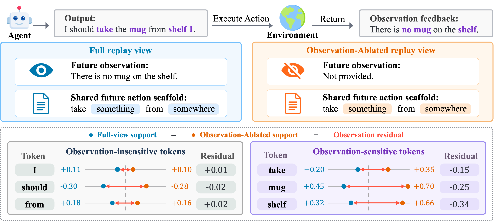
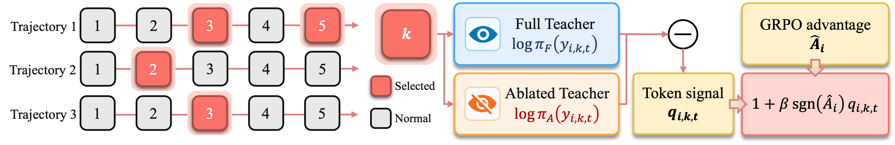

OCSD: Observation-Calibrated Self-Distillation for Agentic RL
TL;DR
- "Agentic Reinforcement Learning with Observation-Calibrated Self-Distillation" (arXiv 2608.04788; Yi Yang, Cong Qin, Xiaodan Liu, Chishui Chen, Qing Dong, Yan Zhang, and colleagues — Nanjing University, work done at Meituan; code released) identifies a confound at the heart of privileged-replay self-distillation: when you re-score a rollout with future observations in context, the score shift mixes the information in those observations with artifacts of the replay scaffold itself.
- The fix is a controlled contrast: score every token under two structurally matched replay views — Full (real future observations) and Observation-Ablated (same scaffold, observation content replaced by "not provided") — and use only the residual between them, applied as a bounded modulation of GRPO advantages at the highest-uncertainty steps.
- On ALFWorld, WebShop, and Search-QA with Qwen3 at 1.7B/4B/8B, OCSD beats GRPO and four self-distillation baselines everywhere reported: e.g. ALFWorld overall 46.6 → 55.5 at 1.7B and 70.6 → 82.8 at 4B, while naive OPSD alone collapses (14.6 at 1.7B).
Why this matters
The OPSD line — re-scoring on-policy tokens under a privileged view to get dense token-level supervision from sparse trajectory rewards — is one of the most active threads in this tracker (AgentOPSD, u-OPSD, W2S-OPD, FutureBridge-OPD, multi-turn OPD replay). Every one of those methods implicitly assumes that the log-prob shift induced by the privileged context is the privileged signal. OCSD is the first paper here to test that assumption and show it fails in the agentic setting: replaying future observations requires reconstructing an extended scaffold (replay format, future-action placeholders), and that scaffold alone moves token scores. Their diagnosis shows Full-view support and scaffold-only support agree on many tokens that have nothing to do with the environment's feedback.
This is a measurement-error argument, and it explains an otherwise confusing empirical pattern: pure OPSD can be worse than nothing in agentic RL (14.6 vs GRPO's 46.6 on ALFWorld at 1.7B) even though the privileged information is genuinely useful. If the dense signal is confounded, densifying credit assignment amplifies noise. Anyone building hindsight-replay distillation into an agent training stack should treat the ablated-view control as a required component, not an ablation.
The core idea
Standard OPSD defines token-level support as the log-prob shift between a teacher view (same policy, privileged replay evidence \(E_{i,k}\)) and the student view:
where \(y_{i,k,t}\) is token \(t\) of interaction step \(k\) in trajectory \(i\), and \(h_{i,k,t}\) its generation context. OCSD instantiates two teachers: the Full view \(E^{F}\) contains the actual future observations plus naturalized schemas of future actions (argument values replaced by semantic-role phrases), while the Observation-Ablated view \(E^{A}\) keeps the identical scaffold but replaces observation content with the fixed phrase "Observation: not provided". The observation residual cancels everything the two views share:
(the student term cancels in the difference). The motivating example: the agent generates "take the mug from shelf 1" and the environment replies "there is no mug on the shelf". Both views shift scores on generic tokens like I, should, from; only the Full view, seeing the real observation, selectively shifts take, mug, shelf — the residual isolates exactly that.

Figure 1 of the paper: structurally matched Full and Observation-Ablated replay views assign similar support to scaffold-driven tokens; the residual isolates observation-driven support.How it works
Bounded signal. The unbounded residual is squashed to \(q_{i,k,t}=\tanh(e_{i,k,t}/2)\in[-1,1]\): sign says whether the real observation raises or lowers support for the token, magnitude says how much the two views disagree.
Where to apply it. Not everywhere — only at steps where the rollout policy was uncertain. Step uncertainty is average token NLL under the old policy,
and within each trajectory only the top-\(\rho\) fraction of steps by \(u_{i,k}\) is selected (at least one per trajectory).
Sign-preserving integration with GRPO. The trajectory-level GRPO advantage \(\widehat{A}_{i}\) keeps the update direction; the residual only modulates per-token strength on selected steps:
with \(\beta\in[0,1]\). Since \(q\in[-1,1]\), the bracket is non-negative and the advantage never flips sign: in a successful trajectory, observation-supported tokens are reinforced harder; in a failed one, observation-contradicted tokens are punished harder. The modulated advantage drops into the standard clipped GRPO surrogate with KL regularization, unchanged otherwise.
Algorithm (condensed from the paper's Algorithm 1):
for each task x:
sample G trajectories from pi_old; compute GRPO advantages A_i
for each trajectory tau_i:
compute step uncertainty u_ik (mean token NLL)
S_i <- top-rho steps by u_ik
for each step k in S_i:
build Full view E^F (real future obs + naturalized action schemas)
build Ablated view E^A (same scaffold, "Observation: not provided")
for each token t in step k:
delta_F = log pi(y | h, E^F) - log pi(y | h) # same weights
delta_A = log pi(y | h, E^A) - log pi(y | h)
q = tanh((delta_F - delta_A) / 2)
A_ikt <- A_i * (1 + beta * sgn(A_i) * q)
update theta with clipped GRPO surrogate on token-level advantages
Results
On ALFWorld (Qwen3-1.7B): GRPO reaches 46.6 overall success; OPSD alone collapses to 14.6; GRPO+OPSD 41.7; the stronger RLSD and SDAR baselines reach 44.5 and 51.6; OCSD hits 55.5 (±2.3). At 4B: GRPO 70.6 → OCSD 82.8, with RLSD at 79.2 and SDAR at 73.2. On WebShop success (4B): 69.5 → 73.7. Gains hold at 8B and on Search-QA per the paper, and improvements are consistent across ALFWorld task categories and under distribution shift.
The diagnostic section is arguably the more important contribution: over 150 training checkpoints, the residual signal separates valid from invalid actions (AUROC) better than raw Full-view support, and word-level analysis shows Full and Ablated upper tails share scaffold-driven words while the residual concentrates on observation-linked words. An observation-swapping test (Figure 5) confirms the residual tracks the actual future observation rather than generic plausibility. Compute-wise, the two extra replay scorings are forward passes only on selected steps; Figure 6 reports the per-iteration overhead on 8×A100 as a modest addition to standard GRPO.

Figure 3 of the paper: rollout, dual replay scoring, residual computation, and sign-preserving integration with GRPO.How it connects
- AgentOPSD (tracked, tutorial): same benchmarks, same Meituan orbit, complementary axis — AgentOPSD builds turn-level credit by accumulating self-teacher evidence in a Bayesian belief state; OCSD cleans the token-level evidence itself. The obvious composition: feed OCSD's deconfounded residual into AgentOPSD's belief filter.
- u-OPSD (tracked): removes the supervision requirement for OPSD; OCSD removes the scaffold confound. Both are corrections to the same base method, discovered within weeks of each other.
- W2S-OPD and FutureBridge-OPD (tracked): proxy-teacher and future-bridging variants of OPD whose privileged views involve even heavier scaffolds — the confound OCSD measures is plausibly larger there, making the ablated-view control worth retrofitting.
- GiGPO (tracked): the RL-native route to step-level credit (grouped anchor states) — OCSD gets a similar granularity from distillation machinery with no extra rollouts.
- Training-Inference Numeric Mismatch in RL (tracked): another case where the measurement stack, not the learning signal, was the real problem.
Critical take
The confound diagnosis is genuinely valuable and the control is clean, but three caveats temper the headline. First, the calibration is only as good as the structural matching: "Observation: not provided" is itself a distribution shift (models react to explicit absence markers), so the residual subtracts the scaffold plus whatever the absence phrase induces — a second-order confound the paper doesn't ablate. Second, sign preservation means OCSD is deliberately conservative: it can never rescue a good action inside a failed trajectory, only reweight within the GRPO verdict, so the ceiling on credit-assignment improvement is bounded by trajectory-level reward quality. Third, scope: Qwen3 only, three text-observation environments with short observations; whether the residual stays informative when observations are long documents or tool outputs (where the scaffold-to-content ratio changes drastically) is untested. The tanh(·/2) squashing and the β, ρ knobs also add hyperparameters the appendix shows are not fully insensitive. Still — of the five OPSD-family papers tracked here, this is the first that treats replay scoring as a measurement problem, and the AUROC evidence that the residual aligns with real environment feedback is more convincing than the usual benchmark-only case.
If you remember three things
- Privileged-replay support conflates the privileged information with the replay scaffold; naive OPSD can collapse (14.6 vs GRPO's 46.6 on ALFWorld) because it densely trains on that confounded signal.
- The fix is a controlled contrast: score under Full and Observation-Ablated views that differ only in the real observation, and use the residual \(q=\tanh((\delta^F-\delta^A)/2)\) — applied only at high-NLL steps, never flipping the GRPO advantage's sign.
- It works across scales (ALFWorld 46.6→55.5 at 1.7B, 70.6→82.8 at 4B) and, more importantly, the residual demonstrably tracks real environment feedback (AUROC, observation-swapping) — a diagnosis worth retrofitting to every hindsight-distillation method in this tracker.